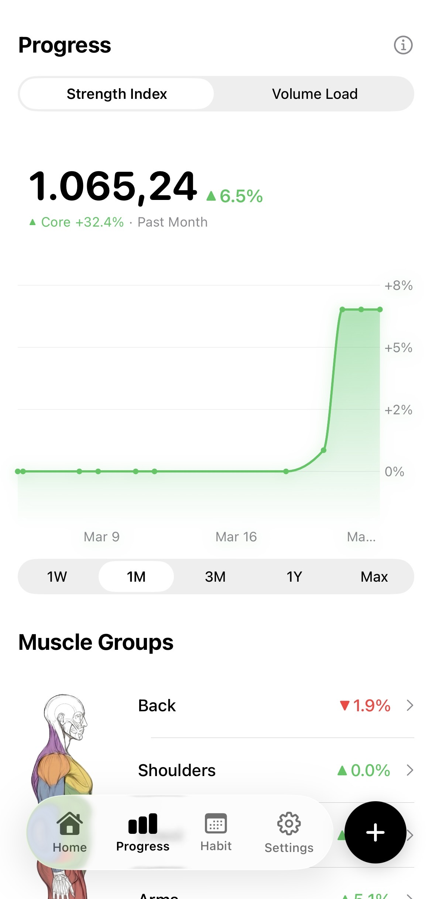
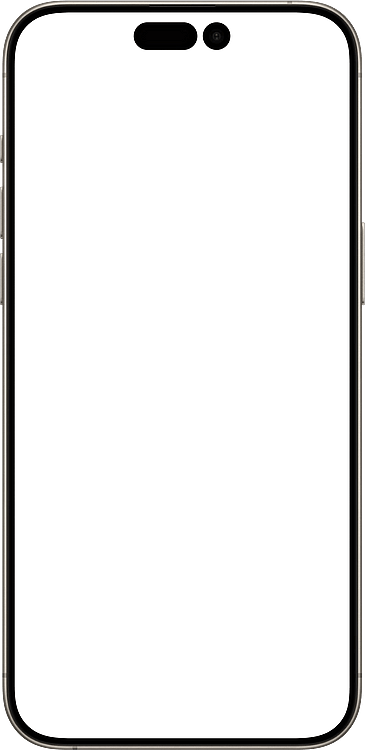
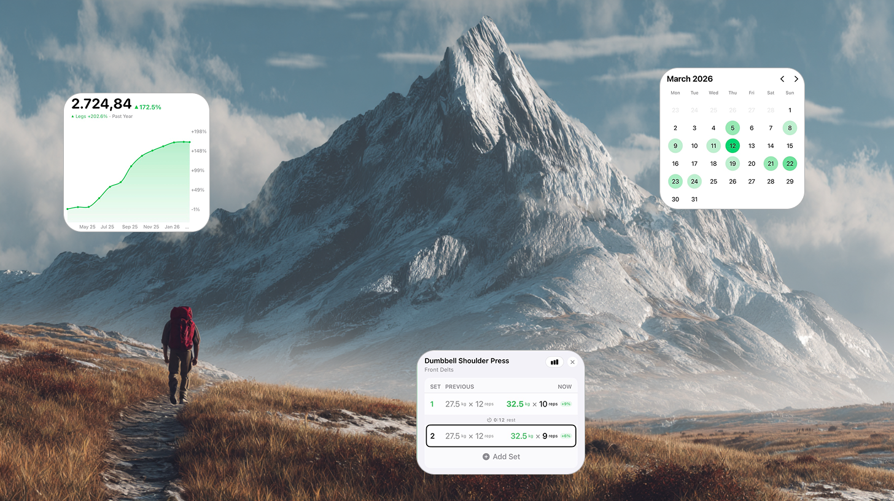

Logge deine Workouts.
Sieh deinen Fortschritt.
Weniger Reibung beim Loggen, mehr Klarheit ueber deinen Fortschritt und bessere Trainingskonstanz.
Warum Vecta
Von Liftern, fuer Lifter.


Fuer echtes Training
Alles, was du brauchst, um mit Klarheit zu trainieren.
Entwickelt fuer schnelles Logging waehrend der Session, echte Progression und die Flexibilitaet, die Lifter wirklich brauchen, ohne den Ballast, der viele Workout-Apps langsam macht.
Schnell genug fuer das Gym
Entwickelt fuer schnelles Logging waehrend der Session mit Kontext aus vorherigen Saetzen, smarten Defaults, Templates und schneller Uebungsauswahl.
Fokus auf Kraft statt Ablenkung
Gemacht fuer Menschen, die Progression, Overload und messbare Verbesserung sehen wollen statt ueberladenem Tracking.
Motivation durch Momentum
Macht Konsistenz sichtbar mit Streaks, Historie, Badges und Kalenderansichten.
Flexibel und realistisch
Unterstuetzt Bodyweight-Uebungen, Maschinen, eigene Uebungen, nachgetragene Sessions und trainingsfreie Tage.
Vision
Staerke aufzubauen ist eine Reise. Bleib mit Vecta konsequent dran.

Frueh dabei sein